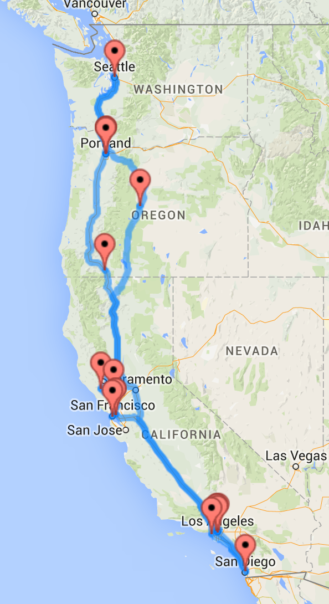
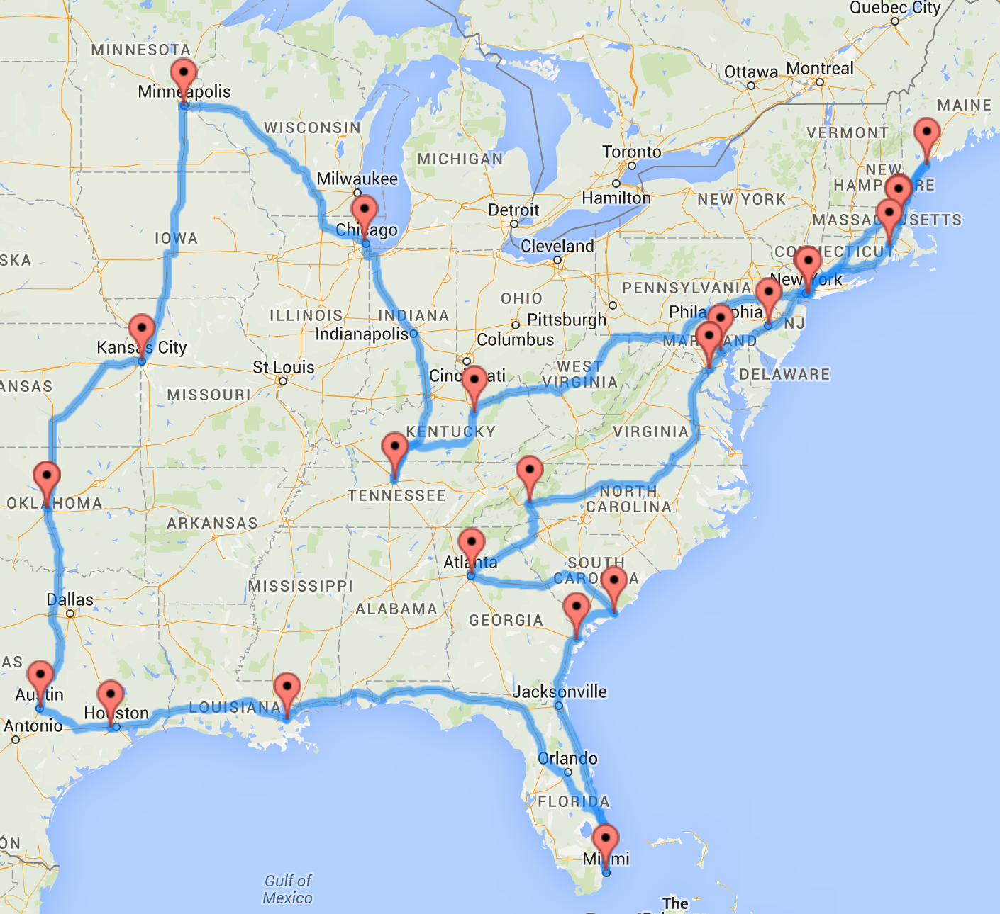

I felt like amusing myself a bit and made a road trip using Randal Olson’s “Where’s Waldo algorithm,” which he used to create an Optimal Roadtrip visiting all 48 states on the contiguous United States.
Instead of putting together places such as national parks, landmarks, or historic sites, I put together the top hipster neighborhoods/cities of America based on the following opinions and my own:
- Forbes: America's Hippest Hipster Neighborhoods
- Thrillist Coolest Neighborhoods in America
- America's Most Hipster Cities
- Travel and Leisure's America's Best Cities for Hipsters
As you can see, taking a hipster road trip across the ENTIRE contiguous United States makes for some serious long drives through desolation. More than anything, it's an unscientific view shows dotted population centers that lean left, young, educated, and disposable income and have the same subcultural affinities for sipping craft beer from mason jars and artisanal notebooks. Here’s a list of the neighborhoods:
- Alberta, Portland, OR
- Arts District, Los Angeles, CA
- Allston-Brighton, Boston, MA
- Asheville, NC
- Boulder, CO
- Bushwick, Brooklyn, NY
- Capitol Hill, Seattle, WA
- Charleston, SC
- Downtown, Portland, OR
- East Austin, Austin, TX
- East Nashville, Nashville, TN
- H Street Corridor, Washington, DC
- Hampden, Baltimore, MD
- Highland Park, Los Angeles, CA
- Kansas City, MO
- Little Five Points, Atlanta, GA
- LoHi, Denver, CO,
- Los Feliz, Los Angeles, CA
- Louisville, KY
- North Loop, Minneapolis, MN
- North Park, San Diego, CA
- Northern Liberties, Philadelphia, PA
- Pearl District, Portland, OR
- Portland, ME
- Providence, RI
- The Mission, San Francisco, CA
- The Uptown, Oakland, CA
- Savannah, GA
- Silver Lake, Los Angeles, CA
- Somerville, MA
- Venice Beach, CA
- Warehouse District, New Orleans, LA
- Westheimer Road, Houston, TX
- Wicker Park, Chicago, IL
- Williamsburg, Brooklyn, NY
- Wynwood, Miami, FL
Best to probably take this in regions and include non-hipster things along the way.
Google Maps Driving Directions of the route to give you an idea of how long you'd like to customized a potential trip: (Split up into parts because you can only pull ten places at once on the interactive map.)
Clearly this is not an optimal way to take a roadtrip. It's probably better to split it into a West Coast Hipster Trip and an Eastern Seaboard Hipster Trip and just fly to Denver or add a pitstop in New Mexico.
The West Coast Hipster takes you down the coast starting in Seattle that adds two stops in Oregon, first at Bend, home of Deschutes Brewery and various outdoor adventures and then Ashland, home of Standing Stone Brewery and the Oregon Shakespeare Festival. It also adds two cities in California to see both the Sonoma and Napa sides of Marin County before entering the urban hipster havens of California. This is where the limits of this particular application has a flaw in that the algorithm seems to assume you'd take this trip in a circular pattern, which made sense for Randy's trip around America but less sense for the West Coast.
West Coast Interactive Version
On the Eastern Seaboard, I added in Oklahoma City because you'd pass by it anyway, and I've actually seen quite some hipster things there. I also added New Orleans, because might as well. This is a trip I'd love to take personally as a Cali kid.
Eastern Seaboard Interactive Version
I used Randy Olson’s codebase and methodology, following the individual steps for an initial version with separate files just for the sake of improving my own knowledge by seeing how he broke down his progress. Andrew Liesinger has made a single Python script available here where you can simple input all destinations as a Python list if you’re interested in the trip of your choice, which is what I did for additional versions